library(tinytex)
library(readr)
library(dplyr)
library(tidyr)
library(ggplot2)
library(tidytext)
library(stringr)
library(wordcloud)
library(SnowballC)
library(corrplot)Yellow Tulip Post Event Survey Analysis - 2022/2023
Introduction
This report is dynamic; it auto-updates itself whenever you have a refreshed dataset with survey responses. The first stage of running analyses for YTP includes getting a sense for the different datasets. The second stage will be to auto-update the data and track it in real time to provide refreshed analyses. First however, we need to agree upon what exactly we’d like to report out on, and part of that is to demo the visualizations we can render in R.
Document Setup
Our analysis relies on several external packages, these are listed in the code snippet below. For your information, code snippets help the reader better understand how a particular visualization or data cleaning step was conducted; it makes the research reproducible.
Data Ingestion
We read in our data with the code snippet below. Moving forward, we’d like to directly connect to Google Sheets using the package googlesheets4 to establish a straight connection and refresh this analysis whenever we’d like.
df_pe_survey <- readr::read_csv(file = '/Users/rszarek/Library/CloudStorage/OneDrive-Unum/Projects/ytp_cdp_analysis/data/YTP Post Event Survey (Responses) - Form Responses 1.csv')Data Engineering
We first need to clean up some of the columns, because the variable names are either too lengthy, or the type of the variable is improper, we do that with the code below:
df_pe_survey_clean <-
df_pe_survey |>
rename(
Date = Timestamp,
Event_Date = "2. Date of Event",
Race = "12. How do you identify racially? Please check all that apply.",
Age = "11. What is your age?",
Zipcode = "10. What is your ZIP code?",
Event = "1. Which YTP event are you completing this survey for? Please check all that apply.",
Join_Network = "YTP has (3) networks–Youth, Community + Educator. Are you interested in joi",
Hear_ytp = "9. How did you hear about The Yellow Tulip Project?",
Connected = "3. This event helps me feel more connected to my community.",
Reduce_Stigma = "5. This event helps reduce the stigma associated with mental illness.",
More_Hopeful = "4. This event helps me feel more hopeful.",
Text_Improve = "8. We want our programming to be as meaningful and engaging as it can be for everyone. Please let us know how we could have improved your experience.",
Educator = "14. Are you an educator (i.e. school nurse, social worker, teacher, professor etc.)?",
Email = "Email Address",
Gender = "13. How do you define your gender identity? Please check all that apply.",
Future_Attend = "6. How likely would you be to attend a future YTP event?",
Recommend = "7. How likely would you be to recommend the event to a friend?"
) |>
mutate(Age = as.double(Age)) |>
mutate(Age_Bin = ifelse(Age < 40, '<40', '>40')) |>
mutate(Zipcode = as.character(stringr::str_extract(Zipcode, "\\d+.\\d+")))Next, we need to factorise the Likert scale options. This factorisation primarily focuses us to transform text into numeric values, so that we are then able to run descriptive statistics on the resultant data and run comparisons across the different demographic partitions:
scale_factorise <- function(x) {
case_when(x == 'Strongly Agree' | x == 'Very likely' ~ 5,
x == 'Agree' | x == 'Likely' ~ 4,
x == 'Neutral' ~ 3,
x == 'Somewhat disagree' | x == 'Unlikely' ~ 2,
x == 'Strongly Disagree' | x == 'Not likely at all' ~ 1)
}
df_pe_survey_clean <-
df_pe_survey_clean |>
mutate(Connected = scale_factorise(Connected),
Reduce_Stigma = scale_factorise(Reduce_Stigma),
More_Hopeful = scale_factorise(More_Hopeful),
Future_Attend = scale_factorise(Future_Attend),
Recommend = scale_factorise(Recommend))Descriptive Statistics
Descriptive statistics primarily deal with counts. Here we count the number of observations in our particular demographic responses to better understand the composition of our sample size.
Zipcode
df_pe_survey_clean |>
count(Zipcode, sort = TRUE)# A tibble: 21 × 2
Zipcode n
<chr> <int>
1 02360 8
2 06830 8
3 <NA> 5
4 01588 3
5 04090 2
6 15206 2
7 01534 1
8 01584 1
9 01610 1
10 02332 1
# ℹ 11 more rowsdf_pe_survey_clean <-
df_pe_survey_clean |>
mutate(City = case_when(Zipcode == '02360' ~ 'Plymouth, MA',
Zipcode == '06830' ~ 'Greenwich, CT',
TRUE ~ NA))A majority of respondents came from two zipcodes: 02360 and 06830. This is Plymouth, MA and Greenwich, CT. The remainder of the zipcodes are from surrounding areas.
Age
We take a look at the distribution of age in our survey:
ggplot(df_pe_survey_clean, aes(x=Age))+
geom_histogram(color="darkblue", fill="lightblue", binwidth = 3)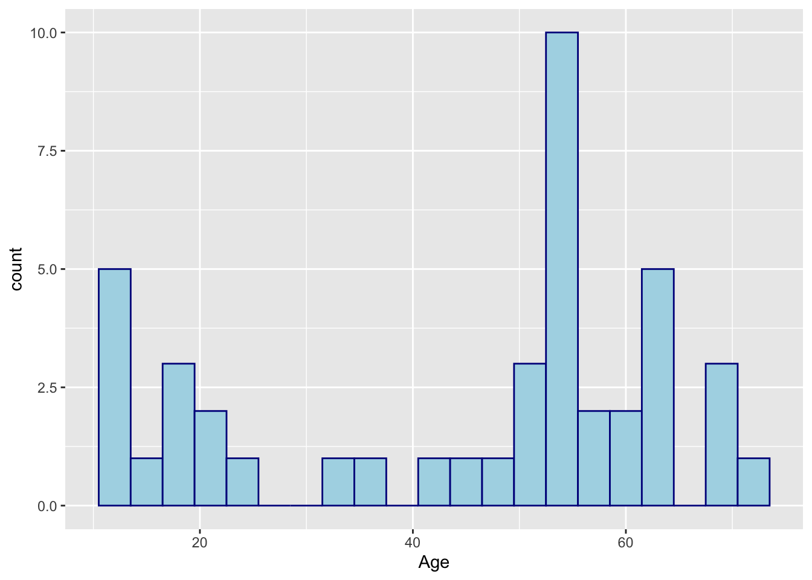
This is a very interesting graphic. We can see that the distribution of our sample is split between around < 40 years of age and > 40 years of age. Therefore, I think it makes sense that the conclusion of this survey regarding the age of the participants is that we are targeting both groups of people, young and elderly. For the purposes of binning the age variable, we should have 40 be the cut-off point.
Heard about YTP
The three primary “ways” that people hear about Yellow Tulip events is through a friend, their school, or work. This is evidenced in the counts:
df_pe_survey_clean |>
count(Hear_ytp, sort = TRUE) |>
filter(n > 5)# A tibble: 3 × 2
Hear_ytp n
<chr> <int>
1 Friend 10
2 School 10
3 Work 9The only other metric I would track for how people heard about YTP would be social media. Though in the current iteration, this does not seem to be a very high volume of people coming in through social media. This may change in the future, however.
Gender
df_pe_survey_clean |>
count(Gender)# A tibble: 3 × 2
Gender n
<chr> <int>
1 Female 14
2 Male 4
3 <NA> 25We had a glitch in the data that has produced a lot of NA values. I believe moving forward this has been corrected. According to the current data, a majority of the survey responses were from females. making up about 75% of the total sample.
Race
We take a look at our survey responses by Race:
df_pe_survey_clean |>
count(Race, sort = TRUE)# A tibble: 20 × 2
Race n
<chr> <int>
1 White 15
2 10/6/2022 4
3 4/23/2022 4
4 10/8/2022 3
5 5/21/2022 2
6 10/1/2022 1
7 10/10/2022 1
8 10/12/2022 1
9 10/19/2022 1
10 10/8/0022 1
11 4/11/2022 1
12 4/22/2022 1
13 4/25/2022 1
14 4/28/2022 1
15 5/1/2022 1
16 5/20/2022 1
17 5/21/2023 1
18 Black or African American 1
19 Latinx/Latine/Hispanic, White 1
20 White, Native American/American Indian 1Unfortunately, a glitch in the data has caused us to mix dates with race information. We need to filter out the dates:
df_pe_survey_clean |>
filter(!stringr::str_detect(Race, '2021|2022|2023|0022')) |>
count(Race, sort=TRUE)# A tibble: 4 × 2
Race n
<chr> <int>
1 White 15
2 Black or African American 1
3 Latinx/Latine/Hispanic, White 1
4 White, Native American/American Indian 1After filtering, our primary composition of attendees is White. With a single participant for Black, Latinx, and Native American.
Joining Network
df_pe_survey_clean |>
count(Join_Network, sort=TRUE) |>
filter(n > 1)# A tibble: 4 × 2
Join_Network n
<chr> <int>
1 <NA> 18
2 Student 7
3 Community Member 6
4 Educator 4A majority of survey responses was from Students, Community Members and Educators.
Analysis
Responses by Age Bin
Let’s break it down by Age Bin:
df_pe_survey_clean |>
group_by(Age_Bin) |>
summarise(sample_size = n(),
Mean_Connected = mean(Connected, na.rm=T),
Mean_Reduce_Stigma = mean(Reduce_Stigma, na.rm=T),
Mean_More_Hopeful = mean(More_Hopeful, na.rm=T),
Mean_Future_Attend = mean(Future_Attend, na.rm=T),
Mean_Recommend = mean(Recommend, na.rm=T))# A tibble: 2 × 7
Age_Bin sample_size Mean_Connected Mean_Reduce_Stigma Mean_More_Hopeful
<chr> <int> <dbl> <dbl> <dbl>
1 <40 14 4.5 4 4.36
2 >40 29 4.69 4.69 4.69
# ℹ 2 more variables: Mean_Future_Attend <dbl>, Mean_Recommend <dbl>Our first analysis takes a look at how participants responded when we binned their age groups together. The sample_size column tells us that we have significantly more participants answering in the > 40 age bracket than the < 40 age bracket. When taking a look at the breakdown of the average scores, we see that 16+ participants are generally more optimistic regarding their responses to the questions.
For reference, the scale questions were:
This event helps me feel more connected to my community. (Connected)
This event helps reduce the stigma associated with mental illness. (Reduce_Stigma)
This event helps me feel more hopeful. (More_Hopeful)
We want our programming to be as meaningful and engaging as it can be for everyone. Please let us know how we could have improved your experience. (Text_Improve)
How likely would you be to attend a future YTP event? (Future_Attend)
How likely would you be to recommend the event to a friend? (Recommend)
Let’s visualize this in a graphic:
df_pe_survey_clean |>
group_by(Age_Bin) |>
summarise(sample_size = n(),
Mean_Connected = mean(Connected, na.rm=T),
Mean_Reduce_Stigma = mean(Reduce_Stigma, na.rm=T),
Mean_More_Hopeful = mean(More_Hopeful, na.rm=T),
Mean_Future_Attend = mean(Future_Attend, na.rm=T),
Mean_Recommend = mean(Recommend, na.rm=T)) |>
pivot_longer(cols = c(-Age_Bin, -sample_size),
names_to = 'Question',
values_to = "Average") |>
ggplot(aes(fill = Age_Bin, y = Average, x = Question)) +
geom_bar(position='dodge', stat = 'identity') +
theme(axis.text.x = element_text(angle = 30, vjust = 0.5, hjust=0.7)) +
scale_fill_manual(values = c("#f9ba00",
"#00235f"))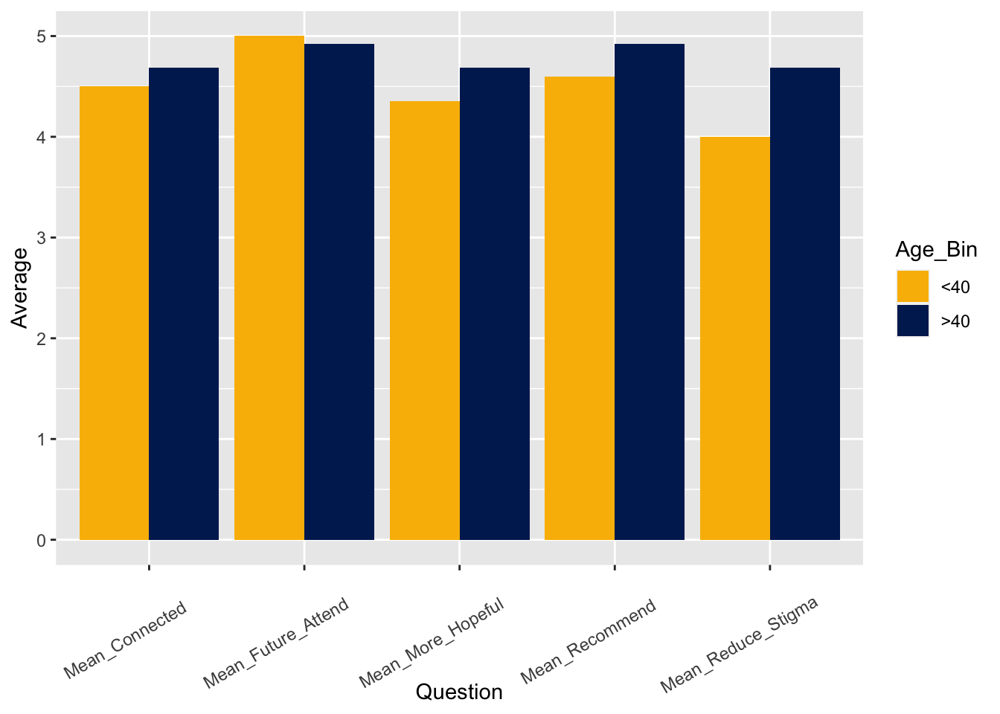
Differences are consistent across the two age brackets. The biggest difference is observed with the question: “This event helps reduce the stigma associated with mental illness.” responses. The Age < 40 bracket hovers around an “Agree” for this response. A > 40 response hovers around 4.5.
Responses by Event
df_pe_survey_clean |>
filter(Event == 'Fall Hope Garden Planting' |
Event == 'Spring Hope Day Event') |>
group_by(Event) |>
summarise(sample_size = n(),
Mean_Connected = mean(Connected, na.rm=T),
Mean_Reduce_Stigma = mean(Reduce_Stigma, na.rm=T),
Mean_More_Hopeful = mean(More_Hopeful, na.rm=T),
Mean_Future_Attend = mean(Future_Attend, na.rm=T),
Mean_Recommend = mean(Recommend, na.rm=T)) |>
pivot_longer(cols = c(-Event, -sample_size),
names_to = 'Question',
values_to = "Average") |>
ggplot(aes(fill = Event, y = Average, x = Question)) +
geom_bar(position='dodge', stat = 'identity') +
theme(axis.text.x = element_text(angle = 30, vjust = 0.5, hjust=0.7)) +
scale_fill_manual(values = c("#f9ba00",
"#00235f"))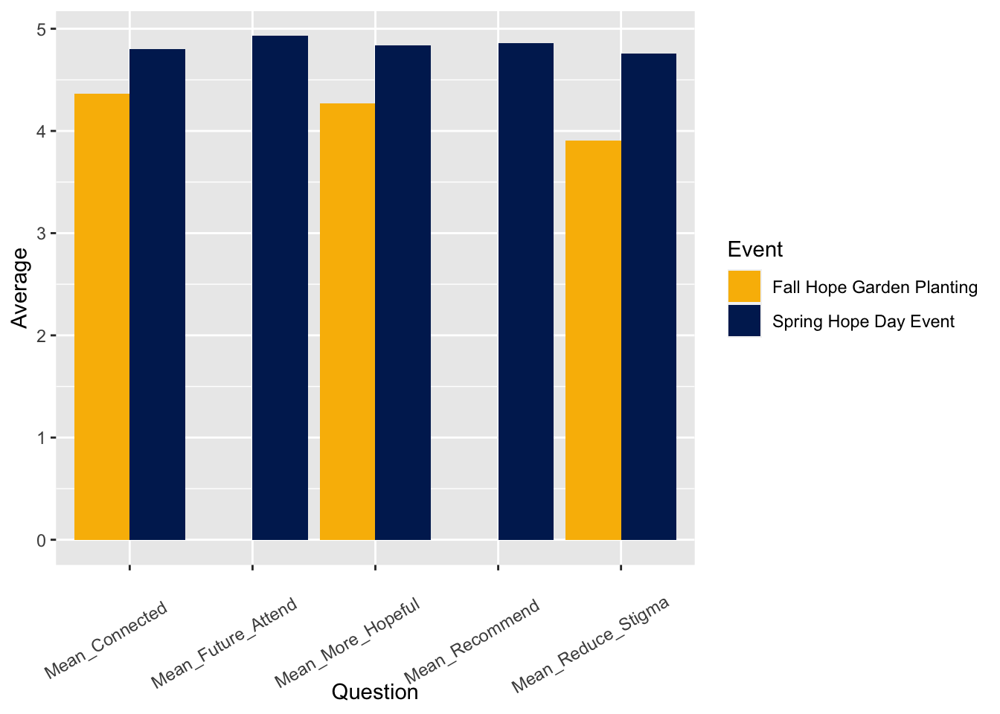
Responses by Top Two Zipcodes
Results are mostly consistent between the top two zipcodes: 02360 and 06830.
df_pe_survey_clean |>
filter(Zipcode == '02360' |
Zipcode == '06830') |>
group_by(Zipcode) |>
summarise(sample_size = n(),
Mean_Connected = mean(Connected, na.rm=T),
Mean_Reduce_Stigma = mean(Reduce_Stigma, na.rm=T),
Mean_More_Hopeful = mean(More_Hopeful, na.rm=T),
Mean_Future_Attend = mean(Future_Attend, na.rm=T),
Mean_Recommend = mean(Recommend, na.rm=T)) |>
pivot_longer(cols = c(-Zipcode, -sample_size),
names_to = 'Question',
values_to = "Average") |>
ggplot(aes(fill = Zipcode, y = Average, x = Question)) +
geom_bar(position='dodge', stat = 'identity') +
theme(axis.text.x = element_text(angle = 30, vjust = 0.5, hjust=0.7)) +
scale_fill_manual(values = c("#f9ba00",
"#00235f"))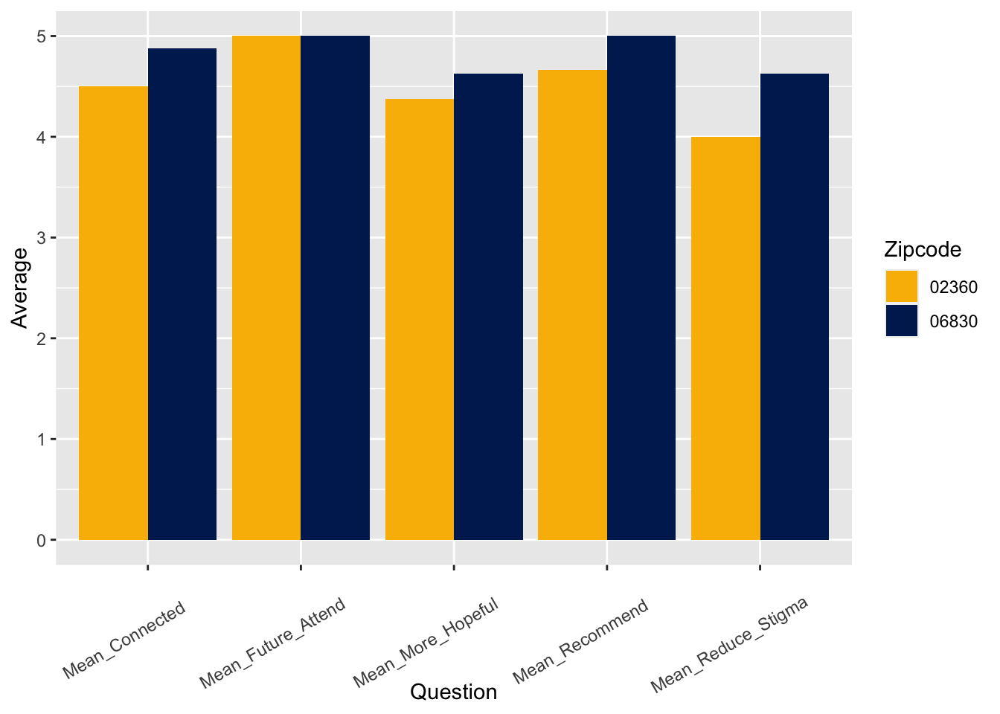
Responses by Gender
df_pe_survey_clean |>
group_by(Gender) |>
summarise(sample_size = n(),
Mean_Connected = mean(Connected, na.rm=T),
Mean_Reduce_Stigma = mean(Reduce_Stigma, na.rm=T),
Mean_More_Hopeful = mean(More_Hopeful, na.rm=T),
Mean_Future_Attend = mean(Future_Attend, na.rm=T),
Mean_Recommend = mean(Recommend, na.rm=T)) |>
pivot_longer(cols = c(-Gender, -sample_size),
names_to = 'Question',
values_to = "Average") |>
ggplot(aes(fill = Gender, y = Average, x = Question)) +
geom_bar(position='dodge', stat = 'identity') +
theme(axis.text.x = element_text(angle = 30, vjust = 0.5, hjust=0.7)) +
scale_fill_manual(values = c("#f9ba00",
"#00235f"))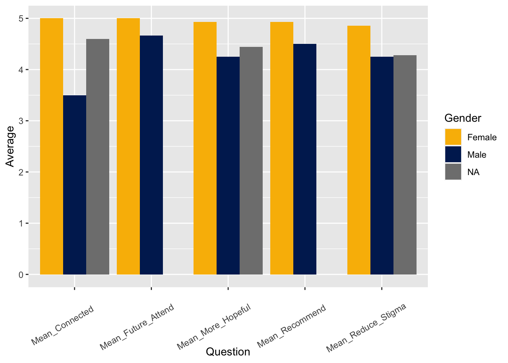
Responses by Age Bin
df_pe_survey_clean |>
filter(Join_Network == 'Student' |
Join_Network == 'Community Member' |
Join_Network == 'Educator') |>
group_by(Join_Network) |>
summarise(sample_size = n(),
Mean_Connected = mean(Connected, na.rm=T),
Mean_Reduce_Stigma = mean(Reduce_Stigma, na.rm=T),
Mean_More_Hopeful = mean(More_Hopeful, na.rm=T),
Mean_Future_Attend = mean(Future_Attend, na.rm=T),
Mean_Recommend = mean(Recommend, na.rm=T)) |>
pivot_longer(cols = c(-Join_Network, -sample_size),
names_to = 'Question',
values_to = "Average") |>
ggplot(aes(fill = Join_Network, y = Average, x = Question)) +
geom_bar(position='dodge', stat = 'identity') +
theme(axis.text.x = element_text(angle = 30, vjust = 0.5, hjust=0.7)) +
scale_fill_manual(values = c("#f9ba00",
"#00235f",
'darkgray'))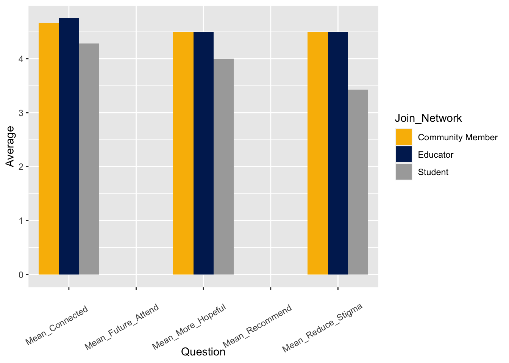
Most responses across the three types of members is in-line with one another. Though for students, the ability to reduce stigma with these events is lower than Educators and Community Members. This could be an area for further research.
Correlation Analysis
A correlation is a trend between two different numbers. The scale of a correlation is -1 through +1. A -1 correlation would indicate a perfect inverse relationship, as one goes up, the other goes down. A positive correlation would indicate as one variable increases, so does the other variable. For example, temperature and number of sunburns. If the correlation is +1, this would indicate that as temperature increases, so does the number of sunburns, which makes perfect sense. A negative correlation with this example could be with snowfall. As temperatures increase, snowfall decreases. This is a negative correlation.
In our survey context, we intend to take a look at how our various scale questions correlate with one another. We’d like to see mostly positive correlations, where the more somebody felt connected to an event, the higher probability that they will tell their friends and family about it.
df_corr <-
df_pe_survey_clean %>%
select(Connected,
Reduce_Stigma,
More_Hopeful,
Future_Attend,
Recommend)
M_corr = cor(df_corr, use = "pairwise.complete.obs")
M_test = cor.mtest(df_corr, conf.level = .95)
corrplot(
M_corr,
method = 'number',
diag = FALSE,
type = 'upper',
col = COL2('RdBu', 2),
p.mat = M_test$p,
sig.level = .05,
pch.cex = 2,
pch.col = "darkgray",
tl.col = "black",
tl.srt = 45,
#Text label color and rotation
tl.cex = 1 / par("cex"),
cl.cex = 1 / par("cex")
)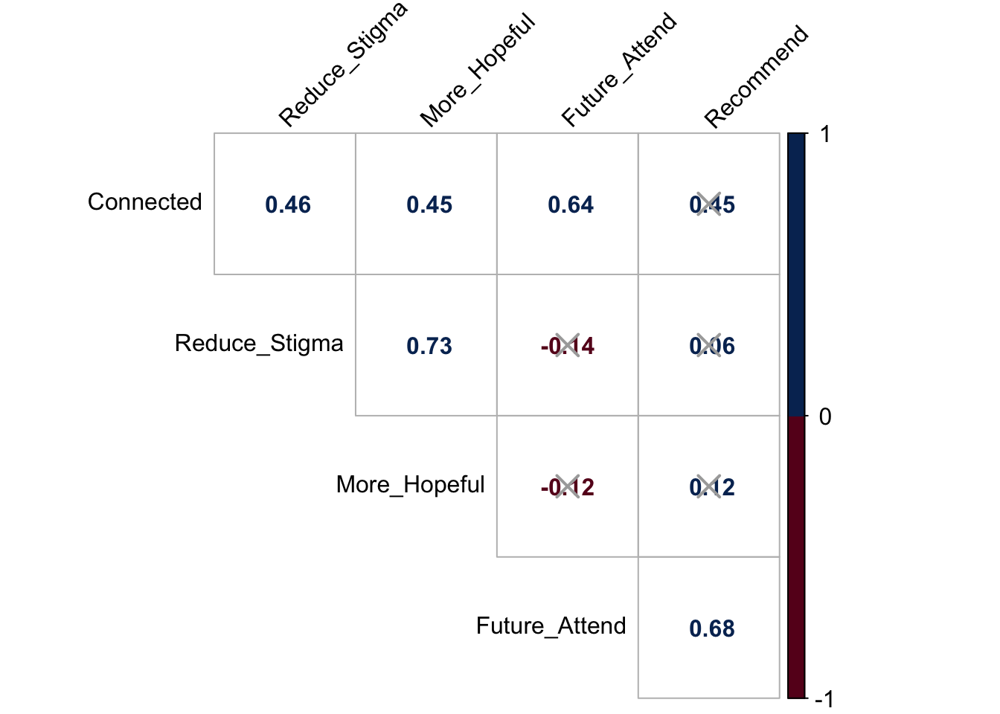
We have a lot of statistically significant findings from the survey questions. Some takeaways include:
- People who are more likely to attend a future event are also more likely to recommend the event to a friend or family member.
- People who believe the event is reducing stigma are also more likely to feel hopeful.
- People who came to the event and feel more connected are also more likely to attend the event in the future.
- An interesting observation is that people who are less hopeful also are more likely to attend a future event (-0.12 correlation, not statistically significant). This is an interesting finding because it shows that there are people who are willing to put in the work to continually come to events to become more optimistic/hopeful.
Time Series Analysis of Reducing Stigma
We take a look at the trend of responses over time:
df_pe_survey_clean |>
mutate(Date = as.Date(Date, format = "%m/%d/%Y")) |>
group_by(Date) |>
summarise(Mean_Stigma = mean(Reduce_Stigma, na.rm = TRUE)) |>
ggplot(aes(x = Date, y = Mean_Stigma)) +
geom_line(color = "steelblue") +
geom_point() +
geom_smooth() +
xlab("") +
theme_bw() +
theme(axis.text.x = element_text(angle = 60, hjust = 1))# +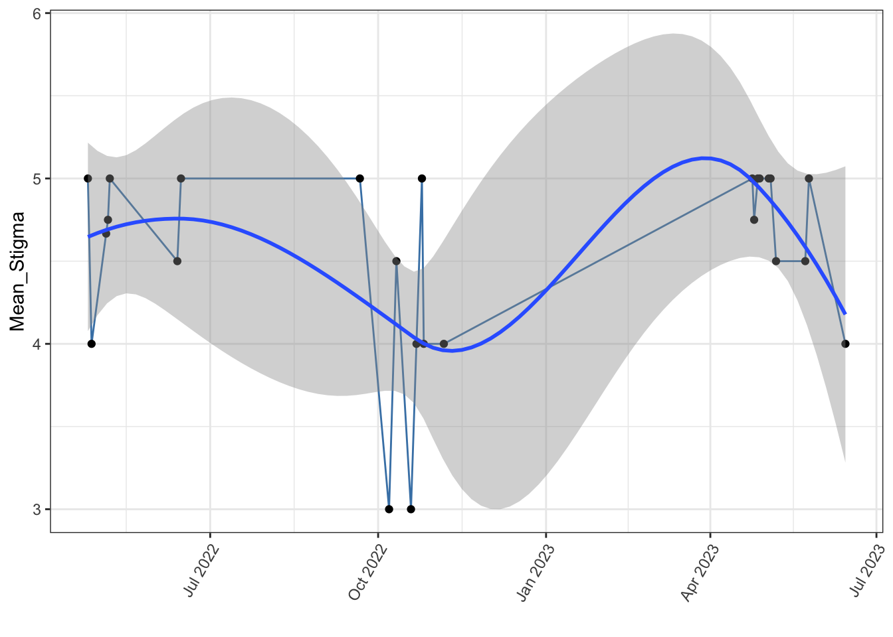
#scale_x_date(limit = c(as.Date("2017-01-01"), as.Date("2017-02-11"))) +
#ylim(0, 1.5)Here we are attempting to model average Stigma ratings over time. The hope would be that over time, these series of events help reduce the stigma associated with mental illness.
Time Series Analysis of Recommend to a Friend
df_pe_survey_clean |>
mutate(Date = as.Date(Date, format = "%m/%d/%Y")) |>
group_by(Date) |>
summarise(Mean_Recommend = mean(Recommend, na.rm = TRUE)) |>
filter(!is.na(Mean_Recommend)) |>
ggplot(aes(x = Date, y = Mean_Recommend)) +
geom_line(color = "steelblue") +
geom_point() +
geom_smooth() +
xlab("") +
theme_bw() +
theme(axis.text.x = element_text(angle = 60, hjust = 1))# +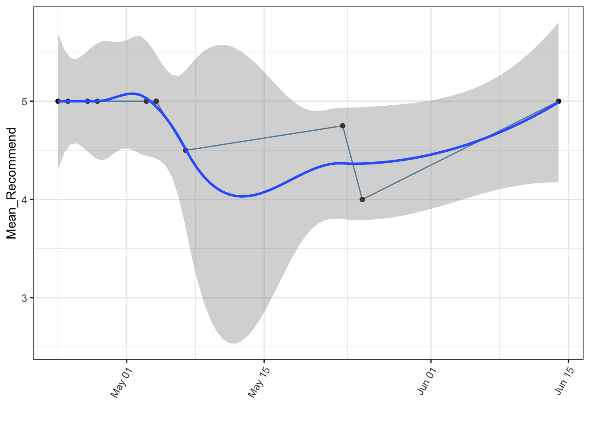
#scale_x_date(limit = c(as.Date("2017-01-01"), as.Date("2017-02-11"))) +
#ylim(0, 1.5)This question is a bit too recent for us to be able to analyze effectively
Time Series of Future Attendance
df_pe_survey_clean |>
mutate(Date = as.Date(Date, format = "%m/%d/%Y")) |>
group_by(Date) |>
summarise(Mean_Attend = mean(Future_Attend, na.rm = TRUE)) |>
filter(!is.na(Mean_Attend)) |>
ggplot(aes(x = Date, y = Mean_Attend)) +
geom_line(color = "steelblue") +
geom_point() +
geom_smooth() +
xlab("") +
theme_bw() +
theme(axis.text.x = element_text(angle = 60, hjust = 1))# +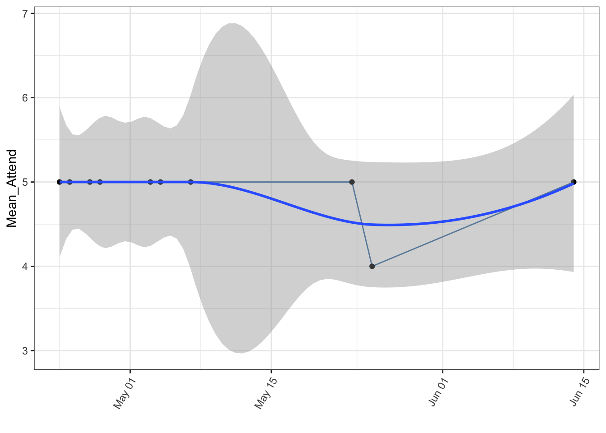
#scale_x_date(limit = c(as.Date("2017-01-01"), as.Date("2017-02-11"))) +
#ylim(0, 1.5)Text Analysis: “How can we improve?”
This question was difficult to decipher because it seems to be a catch-all for any open-ended text that people want to express about these events in general. Most of the comments in this field were not recommendations at all, but rather, praise about the event. For example:
It was a lot of fun, and I loved it!
I was thrilled with the participation in the hooray walk. It was amazing to have activities for participants at the end.
It was fantastic!
These types of comments were mixed in with actual recommendations, such as:
More widespread event promotion and publicity.
I feel that we tried to put 2 events in one. I think the panel discussion should have been the following night.
Therefore, any sort of word cloud analysis that we’d like to implement will be mixed in terms of how the words should be interpreted. As a majority of the comments were positive feedback, we can interpret the word cloud as representing general feedback about the performance of YTP over the last year.
tokens_clean <-
df_pe_survey_clean |>
unnest_tokens(input = Text_Improve,output = 'word') |>
select(word) |>
anti_join(stop_words) |>
filter(!is.na(word)) |>
count(word)
pal <- brewer.pal(8,"Dark2")
tokens_clean %>%
with(wordcloud(word, n, random.order = FALSE, max.words = 25, colors=pal))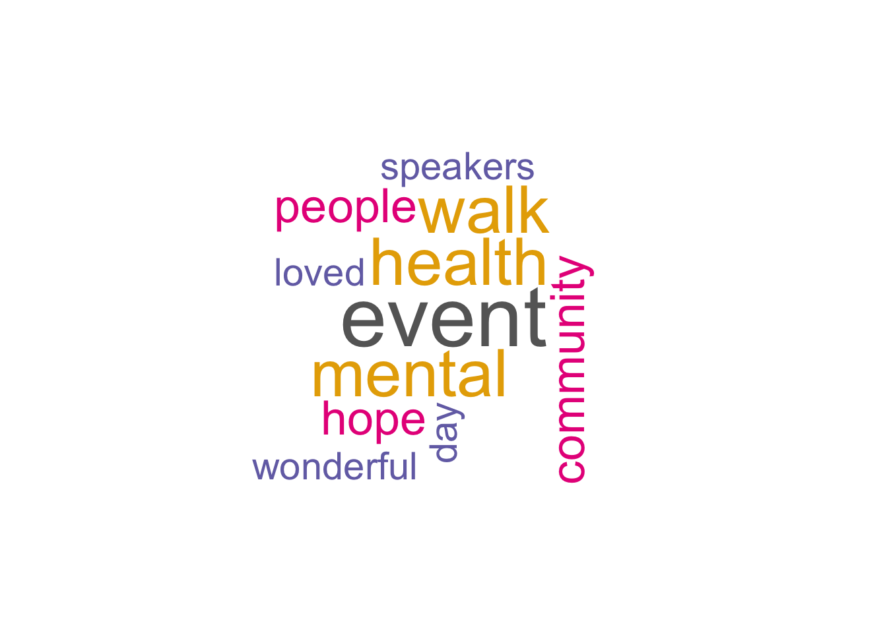